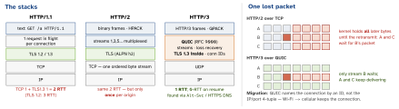

networking · folio
In one line: Same semantics (methods, status, headers — RFC 9110) on three wire formats: 1.1 = text, one request at a time per TCP connection; 2 = binary frames, many streams multiplexed on one TCP connection (TCP head-of-line blocking remains); 3 = the same over QUIC/UDP with TLS 1.3 built in — per-stream loss recovery, fast setup, connection migration.
Download PDF Print view LaTeX source


How it works
- 1.1 (RFC 9112): connections are persistent by default (
Connection: closeends one) — reuse skips TCP + TLS setup. One response at a time: pipelining had to answer in order (one slow response blocks the rest) and proxies broke it — off everywhere. Workaround: ∼6 connections per host. - 2 (RFC 9113): frames (
HEADERS DATA SETTINGS WINDOW_UPDATE RST_STREAM PING GOAWAY); client streams have odd ids; flow control per stream and connection.RST_STREAMcancels one request without killing the connection. HPACK: static + dynamic table + Huffman — a repeated cookie costs a byte or two. Server push: dead (Chrome removed it, 2022(unverified)) — use103 Early Hints. - 3 (RFC 9114): streams are independent in QUIC, so loss stalls only its stream. QPACK replaces HPACK (HPACK assumes in-order delivery). UDP blocked → the client falls back to TCP.
Caching (RFC 9111) — freshness, then validation
max-age=60 | fresh for 60 s — served with no request |
no-cache | may store, must revalidate before every use |
no-store | never write it anywhere (secrets, PII) |
private / public | only the end client / shared caches (CDN) too |
s-maxage | freshness for shared caches only |
must-revalidate | no stale reuse after expiry |
stale-while-revalidate | serve stale now, refresh in background |
immutable | never revalidate (hashed asset URLs) |
Validation: response ETag: "v7" (opaque; W/ = weak) or Last-Modified → request If-None-Match / If-Modified-Since → 304 (no body, reuse cache) or 200. Vary: Accept-Encoding adds those request headers to the cache key; Vary: * makes it uncacheable.
Example — which protocol did I get?
final class Probe: NSObject, URLSessionTaskDelegate {
func urlSession(_ s: URLSession, task: URLSessionTask,
didFinishCollecting m: URLSessionTaskMetrics) {
for t in m.transactionMetrics {
print(String(describing: t.networkProtocolName), // h2, h3
t.isReusedConnection, // keep-alive hit
t.resourceFetchType) // .localCache?
}
}
}
var req = URLRequest(url: url)
req.assumesHTTP3Capable = true // race QUIC (iOS 14.5+)What URLSession does for you
- Negotiates h2 via ALPN and h3 once the server advertises it — no code. Pools and reuses connections per session.
- Sends
Accept-Encoding: gzip, deflate, brand decodes transparently; request bodies are never compressed for you.expectedContentLengthmay be -1. URLCacheobeysCache-Control; when it revalidates, a 304 reaches you as 200 + the cached body(unverified). Responses over ∼5 % of the disk cache are not stored.- Cookies:
HTTPCookieStorage(httpShouldSetCookies).WKWebViewkeeps its ownWKHTTPCookieStore— sync them yourself.
CORS — a browser rule
The browser blocks JS from reading a cross-origin response unless the server opts in (Access-Control-Allow-Origin). “Simple” requests (GET/HEAD/POST with form types, no custom headers) go straight out; others — application/json, Authorization, PUT/DELETE — get an OPTIONS preflight (Access-Control-Request-Method/-Headers → Allow-Methods/-Headers/-Max-Age). Allow-Origin: * is refused with credentials. URLSession never enforces it; JS inside WKWebView does.
Cookies
Secure (HTTPS only) · HttpOnly (no JS — limits XSS theft) · SameSite=Strict/Lax/None (cross-site sending — the CSRF defence; None needs Secure; Chrome defaults to Lax) · prefix __Host- = Secure, no Domain, Path=/.
Traps
no-cacheis not “don’t cache” — that isno-store.- “HTTP/2 removed head-of-line blocking” — only at the HTTP layer; TCP still stalls all streams.
- Setting
If-None-Matchyourself: now you get the raw 304 with an empty body — decode fails. - Per-user response without
private: a CDN can serve user A’s data to user B. - “CORS error in my iOS app” — impossible in URLSession; and CORS protects users’ browsers, it is not API auth.
- 1.1-era domain sharding hurts h2: one connection is the point.